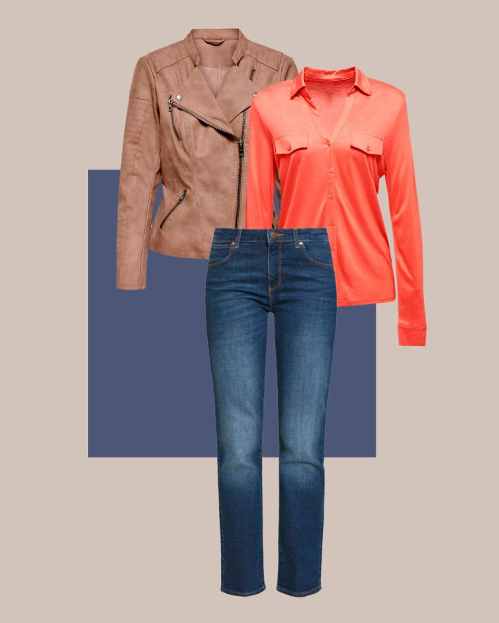

Selon mes mensurations, je suis plutôt…
Notez vos mensurations et observez ici à quelle catégorie vous appartenez. Votre morphologie devrait vous apparaître plus clairement.
Vous trouverez ici un calcul simple pour savoir si vous avez telle ou
telle morphologie. Pour faire ces calculs, utilisez vos mensurations en
centimètres.
Exemple : tour de poitrine 94, tour de taille 77, tour de hanches 100.
Morphologie en rectangle
Voici ce que vous devez savoir si vous avez une

morphologie en rectangle.
Mes caractéristiques
Épaules, tour de poitrine et tour de hanches : ils ont la même largeur (à 2cm près).
S’il y a un peu d’écart entre ces mensurations, ce sont les épaules qui sont les plus larges.
La taille est assez peu marquée.
Mes mensurations
Lorsque vous divisez votre tour de taille par votre tour d’épaules ou votre tour de hanches, le résultat est supérieur ou égal à 0,75. (On parle du rapport taille/hanches, ou RTH, en général).
Comment mettre en valeur ma morphologie ?
L’astuce classique pour jouer de sa silhouette en rectangle est de marquer la taille pour créer un équilibre visuel.
Les vêtements qui me vont le mieux ?
Vous pouvez user et abuser des coupes asymétriques, qui vont créer une structure visuelle et souligner vos courbes.
Sans oublier les vestes et blazers cintrés, surtout si vous ajoutez
du volume sur le haut du corps (des épaulettes, par exemple). Les robes
et jupes qui marquent la taille, les pantalons à coupe droite et surtout
les coupes évasées.
Si vous aimez les slims, préférez une taille haute.
Votre accessoire par excellence : la ceinture voyante, surtout si elle vient marquer la taille.
De quels modèles puis-je m’inspirer ?
Ces femmes ont elles aussi une morphologie de type rectangle : Cameron Diaz, Gigi Hadid, Penelope Cruz, Kendall Jenner.
Celebs: Cameron Diaz, Charlotte Gainsbourg, Gigi Hadid, Penelope Cruz ou encore Kendall Jenner.
Morphologie en triangle
Voici ce que vous devez savoir si vous avez une
morphologie en triangle.
Mes caractéristiques
Les hanches sont plus larges que le tour de poitrine et les épaules. En résumé, le buste est plus fin, par contraste avec les muscles glutéaux assez développés.
Mes mensurations
Lorsque vous divisez votre tour de hanches par votre tour d’épaules ou tour de poitrine, le résultat est égal ou supérieur à 1,05.
Comment mettre en valeur ma morphologie ?
Vous pouvez miser sur les pièces plus volumineuses sur le haut. Autrement dit, mettre en avant votre buste pour équilibrer votre silhouette.
Les vêtements qui me vont le mieux ?
Pour le haut du corps, vous pouvez piocher dans les couleurs vives et accrocheuses et vous pouvez jouer sur les volumes et les matières à volonté.
Les décolletés prononcés, les volants et les formes originales sont faits pour vous.
Pour le bas du corps, préférez des couleurs discrètes, sobres. Les pantalons évasés ou en coupe droite vous vont mieux. Pour les jupes et les robes, la coupe patineuse (en A) est idéale pour vous.
Vous pouvez choisir des accessoires voyants et originaux pour mettre le haut du corps en valeur.
De quels modèles puis-je m’inspirer ?
Ces femmes ont elles aussi une silhouette en triangle : Beyoncé, Shakira ou Jennifer Lopez.
Morphologie en triangle inversé
Voici ce que vous devez savoir si vous avez une

morphologie en triangle inversé ou en V. On parle aussi de pyramide inversée.
Mes caractéristiques
Vos épaules sont plus larges que vos hanches, tout simplement. L’inverse de la morphologie en triangle.
Mes mensurations
Lorsque vous divisez votre tour d’épaules ou de poitrine par votre tour de hanches, le résultat est supérieur ou égal à 1,05.
Comment mettre en valeur ma morphologie ?
Si vous cherchez à équilibrer votre silhouette et compenser l’écart entre les lignes de votre corps, vous devez miser avant tout sur le bas.
Jouez sur les volumes au niveau des hanches, les formes évasées, les coupes patineuse ou péplum, etc. Et vous pouvez vous amuser à privilégier des pantalons, jupes ou collants de couleur, en préférant du neutre pour le haut.
Les vêtements qui me vont le mieux ?
Pour ce qui est du haut, privilégiez les couleurs unies, neutres et éventuellement sombres. Vous pouvez jouer sur les décolletés autant que vous voulez (en V, en cœur ou en arrondi).
Les couleurs voyantes, c’est pour le bas ! Imprimés originaux, jeux de matières et de volumes, jouez de tout cela à partir des hanches.
Les jupes patineuses, les jupes midi ou longues, les robes en A sont parfaites pour vous. Côté pantalons, les évasés et coupes boyfriend sont également vos alliés.
Enfin, pour les accessoires, misez sur les longueurs. Un sautoir fin, par exemple, devrait vous aller mieux qu’un ras-du-cou.
De quels modèles puis-je m’inspirer ?
Ces femmes ont elles aussi une silhouette en triangle inversé (ou pyramide inversée) : Angelina Jolie, Demi Moore ou encore Noami Campbell, Pink ou Jessica Alba.
Morphologie en sablier
Voici ce que vous devez savoir si vous avez une

morphologie en sablier ou en X.
Mes caractéristiques
Votre silhouette est assez facilement identifiable, avec une largeur similaire des hanches et des épaules (ou du buste), et une taille (très) marquée.
Mes mensurations
Lorsque vous divisez votre tour de taille par votre tour de poitrine, le résultat est inférieur ou égal à 0,75. Cela vaut aussi si vous divisez votre tour de taille par votre tour de hanches.
Comment mettre en valeur ma morphologie ?
Pour apporter un équilibre parfait à votre silhouette, l’idéal est de jouer sur les volumes, couleurs et matières de manière égale en haut et en bas. Le tout en marquant naturellement votre taille.
Les vêtements qui me vont le mieux ?
Il y a peu de vêtements ou de coupes à éviter pour ce type de morphologie.
Vous pouvez porter tout type de décolleté. N’hésitez pas à rentrer votre haut dans votre ceinture pour marquer la taille.
Les vestes et chemises cintrées et les coupes en portefeuille (pour lrs robes) vous vont mieux.
Pour le bas, les jeans skinny ou slim vous vont mieux. Taille haute ou taille basse, selon ce qui vous met le plus à l’aise. Les jupes près du corps sont aussi faciles à porter pour ce type de silhouette.
N’hésitez pas à accessoiriser avec une ceinture voyante, à porter de préférence à la taille ou juste au-dessus des hanches.
De quels modèles puis-je m’inspirer ?
Ces femmes ont elles aussi une silhouette en sablier : Aya Nakamura, Eva Longoria, Salma Hayek, Dita Von Teese, ou encore Blake Lively. La plus connue étant tout de même Marilyn Monroe…
Morphologie en ovale
Voici ce que vous devez savoir si vous avez

une morphologie en ovale, en O ou ronde.
caractéristiques
Votre taille est plus volumineuse que la ligne des épaules et des hanches. La taille est peu marquée.
Comment mettre en valeur ma morphologie ?
Jouez sur des pièces taille haute, qui marquent le haut de la ceinture, pour équilibrer la silhouette et l’allonger.
Les vêtements qui me vont le mieux ?
Pour le haut, vous pouvez vous faire plaisir avec des vestes et chemises coupe péplum (évasée en bas), des décolletés en V ou arrondis, ouverts sur les épaules ou plongeants en longueur si vous aimez.
N’hésitez pas à souligner la ligne de la poitrine. Cette ligne marquée vous permet d’équilibrer votre silhouette entre les épaules et les hanches. La robe coupe empire, par exemple, est un excellent allié dans votre garde-robe.
Les rayures verticales sont idéales pour vous, les couleurs sombres étirent la silhouette.
Vous pouvez vous faire plaisir avec des pantalons taille haute, en coupe slim, droite ou cigarette.
Votre accessoire parfait : une ceinture dorée ou très visuelle entre la taille et la poitrine.